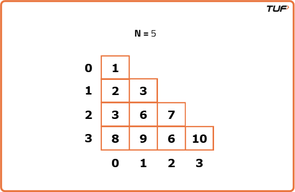
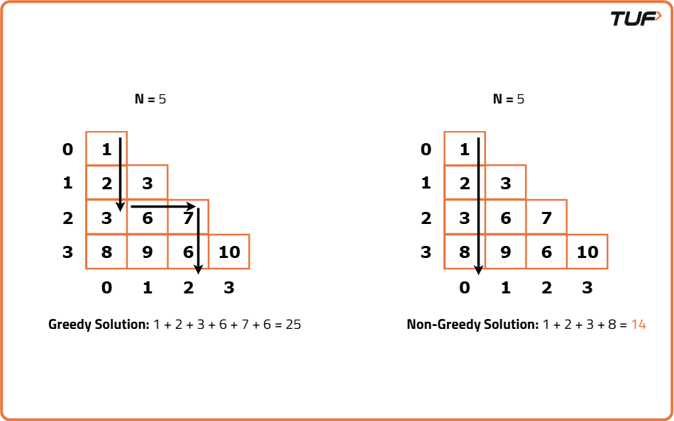
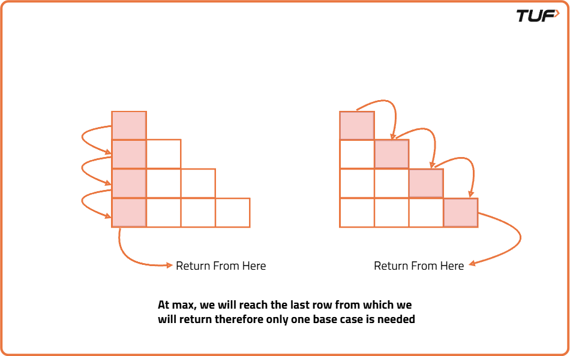
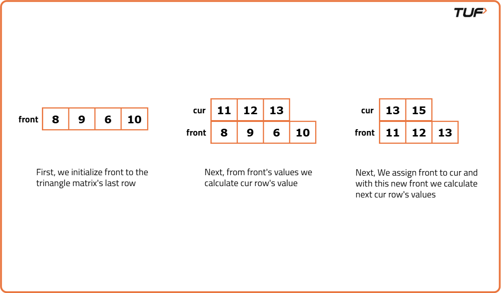

Minimum path sum in Triangular Grid (DP 11)
Problem Statement: Given a 2D integer array named triangle with n rows. Its first row has 1 element and each succeeding row has one more element in it than the row above it. Return the minimum falling path sum from the first row to the last.
Movement is allowed only to the bottom or bottom-right cell from the current cell.
Examples
Input: triangle = [[1], [1, 2], [1, 2, 4]] Output: 3 Explanation: One possible route can be: Start at 1st row -> bottom -> bottom. Input : triangle = [[1], [4, 7], [4,10, 50], [-50, 5, 6, -100]] Output: -42 Explanation : One possible route can be: Start at 1st row -> bottom-right -> bottom-right -> bottom-right
Disclaimer: Here is the practice link to help you assess your knowledge better. It's highly recommend trying to solve it before looking at the solution.
Memoization Approach
Algorithm
This question is a slight modification of the question discussed in Minimum Path Sum in a Grid. In the previous problem, we were given a rectangular matrix whereas here the matrix is in the form of a triangle. Moreover, we don’t have a fixed destination, we need to return the minimum sum path from the top cell to any cell of the bottom row.
Why a Greedy Solution doesn’t work?
As we have to return the minimum path sum, the first approach that comes to our mind is to take a greedy approach and always form a path by locally choosing the cheaper option. This approach will not give us the correct answer. Let us look at this example to understand:
Why a Greedy Solution doesn’t work?
As we have to return the minimum path sum, the first approach that comes to our mind is to take a greedy approach and always form a path by locally choosing the cheaper option. This approach will not give us the correct answer. Let us look at this example to understand:

At every cell, we have two choices: to move to the bottom cell or move to the bottom-right cell. Our ultimate aim is to provide a path that provides us the least path sum. Therefore at every cell, we will make the choice to move which costs us less.
- Figure on the left gives us a greedy solution, where we move by taking the local best choice.
- Figure on the right gives us a non-greedy solution.
- Start from the top of the triangle and move downward, making a choice at each level to go either directly down or diagonally down-right.
- Define a recursive function that takes the current row and column as input and returns the minimum path sum starting from that position.
- At each step, calculate the sum by adding the current value to the minimum of the two possible moves (down and diagonal).
- Use a 2D DP table to store the results of subproblems so that repeated calls to the same position return the precomputed result instead of recalculating it.
- Base case is when you're on the last row; return the value at that position since there's nowhere else to go.

Code
#include <bits/stdc++.h>
using namespace std;
// Class to solve the problem
class Solution {
public:
// Recursive function with memoization
int solve(int i, int j, vector<vector<int>> &triangle, int n, vector<vector<int>> &dp) {
// If value already computed
if (dp[i][j] != -1)
return dp[i][j];
// If at bottom row
if (i == n - 1)
return triangle[i][j];
// Compute both downward and diagonal moves
int down = triangle[i][j] + solve(i + 1, j, triangle, n, dp);
int diag = triangle[i][j] + solve(i + 1, j + 1, triangle, n, dp);
// Store and return min path sum
return dp[i][j] = min(down, diag);
}
// Function to start the process
int minimumPathSum(vector<vector<int>> &triangle) {
int n = triangle.size();
vector<vector<int>> dp(n, vector<int>(n, -1));
return solve(0, 0, triangle, n, dp);
}
};
// Main function
int main() {
Solution obj;
vector<vector<int>> triangle{
{1},
{2, 3},
{3, 6, 7},
{8, 9, 6, 10}
};
cout << obj.minimumPathSum(triangle);
return 0;
}
Complexity Analysis
Time Complexity: O(N*N), we fill our complete 2D DP table one by one.Space Complexity: O(N) + O(N*N), additional space for recursion stack and 2D DP table.
Tabulation Approach
Algorithm
Tabulation is the bottom-up approach, which means we will go from the base case to the main problem. The steps to convert to the tabular solution are given below:
- Start by creating a 2D table with the same dimensions as the triangle to store intermediate results.
- Fill the last row of this table with the same values from the last row of the triangle since that's the base of the problem.
- Begin filling the table from the second-last row and move upwards until you reach the top row.
- For each cell, compute the minimum of the two possible paths, directly downward and diagonally downward and add the current triangle value.
- Since the table is being filled bottom-up, by the time you reach any cell, the needed values from the row below are already available.
- After filling the entire table, the topmost cell will hold the minimum path sum from top to bottom of the triangle.
Code
#include <bits/stdc++.h>
using namespace std;
// Class to solve the triangle minimum path sum
class Solution {
public:
// Function to compute the minimum path sum using tabulation
int minimumPathSum(vector<vector<int>> &triangle, int n) {
// Create a 2D dp array to store intermediate results
vector<vector<int>> dp(n, vector<int>(n, 0));
// Initialize the last row of dp with triangle values
for (int j = 0; j < n; j++) {
dp[n - 1][j] = triangle[n - 1][j];
}
// Traverse from second-last row to the top
for (int i = n - 2; i >= 0; i--) {
for (int j = i; j >= 0; j--) {
// Calculate sum from down and diagonal paths
int down = triangle[i][j] + dp[i + 1][j];
int diag = triangle[i][j] + dp[i + 1][j + 1];
// Store the minimum of the two paths
dp[i][j] = min(down, diag);
}
}
// Return the minimum path sum from top
return dp[0][0];
}
};
// Main function to run the code
int main() {
// Define the triangle
vector<vector<int>> triangle{
{1},
{2, 3},
{3, 6, 7},
{8, 9, 6, 10}
};
// Get the number of rows
int n = triangle.size();
// Create object of the Solution class
Solution solver;
// Print the result
cout << solver.minimumPathSum(triangle, n);
return 0;
}
Complexity Analysis
Time Complexity: O(N*N), entire triangular grid is visited atleast once.Space Complexity: O(N*N), space used for 2D DP array.
Space Optimization Approach
Algorithm
If we closely look the relation,
dp[i][j] = matrix[i][j] + min(dp[i+1][j] + dp[i+1][j+1]))
We see that we only need the next row, in order to calculate dp[i][j]. Therefore we can space optimize it. Initially we can take a dummy row (say front). We initialize this row to the triangle matrix's last row (as done in tabulation). Now the current row (say cur) only needs the front row’s value in order to calculate dp[i][j].
We see that we only need the next row, in order to calculate dp[i][j]. Therefore we can space optimize it. Initially we can take a dummy row (say front). We initialize this row to the triangle matrix's last row (as done in tabulation). Now the current row (say cur) only needs the front row’s value in order to calculate dp[i][j].

At last, front [0] will give us the required answer.Code
#include <bits/stdc++.h>
using namespace std;
// Define a class to hold the solution
class Solution {
public:
// Function to calculate the minimum path sum in triangle
int minimumPathSum(vector<vector<int>> &triangle, int n) {
// Create an array to store the values of the row below
vector<int> front(n, 0);
// Create an array to store the values of the current row
vector<int> cur(n, 0);
// Initialize front with values from the last row of the triangle
for (int j = 0; j < n; j++) {
front[j] = triangle[n - 1][j];
}
// Traverse the triangle from bottom to top
for (int i = n - 2; i >= 0; i--) {
// Traverse each element in the current row
for (int j = i; j >= 0; j--) {
// Calculate sum when going down
int down = triangle[i][j] + front[j];
// Calculate sum when going diagonal
int diagonal = triangle[i][j] + front[j + 1];
// Store the minimum of the two in current row
cur[j] = min(down, diagonal);
}
// Move current row values to front for next iteration
front = cur;
}
// Return the final answer from the top of triangle
return front[0];
}
};
// Main function to test the solution
int main() {
// Create the triangle
vector<vector<int>> triangle{
{1},
{2, 3},
{3, 6, 7},
{8, 9, 6, 10}
};
// Get number of rows
int n = triangle.size();
// Create object of Solution
Solution obj;
// Call the function and print result
cout << obj.minimumPathSum(triangle, n);
return 0;
}
Complexity Analysis
Time Complexity: O(N*N), every element of triangular grid is visited atleast once.Space Complexity: O(N), we only use one array for storing rows.